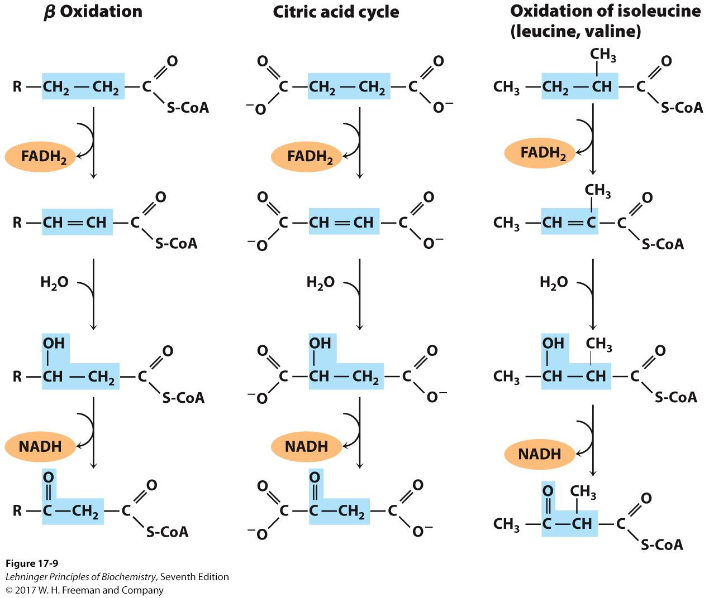
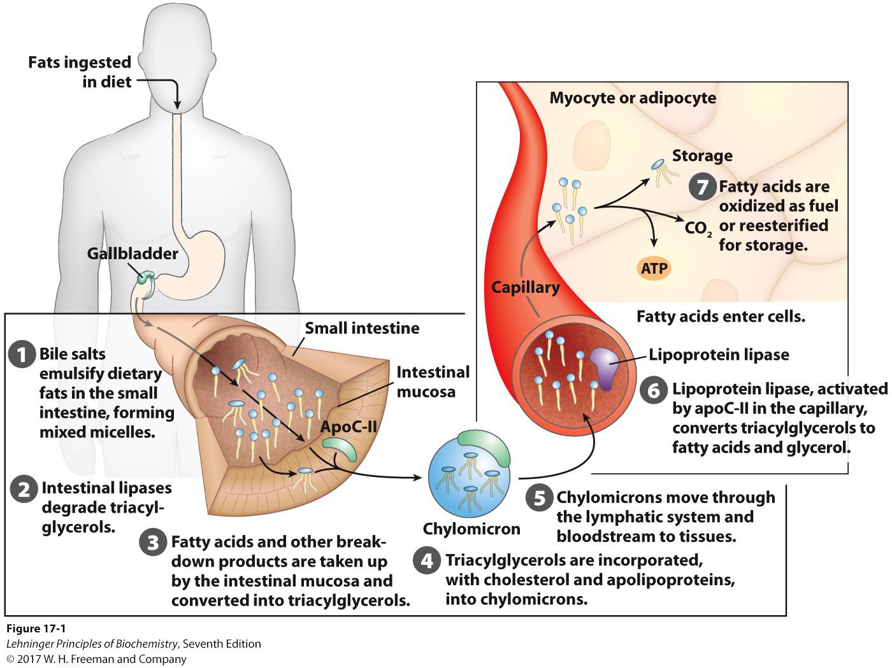
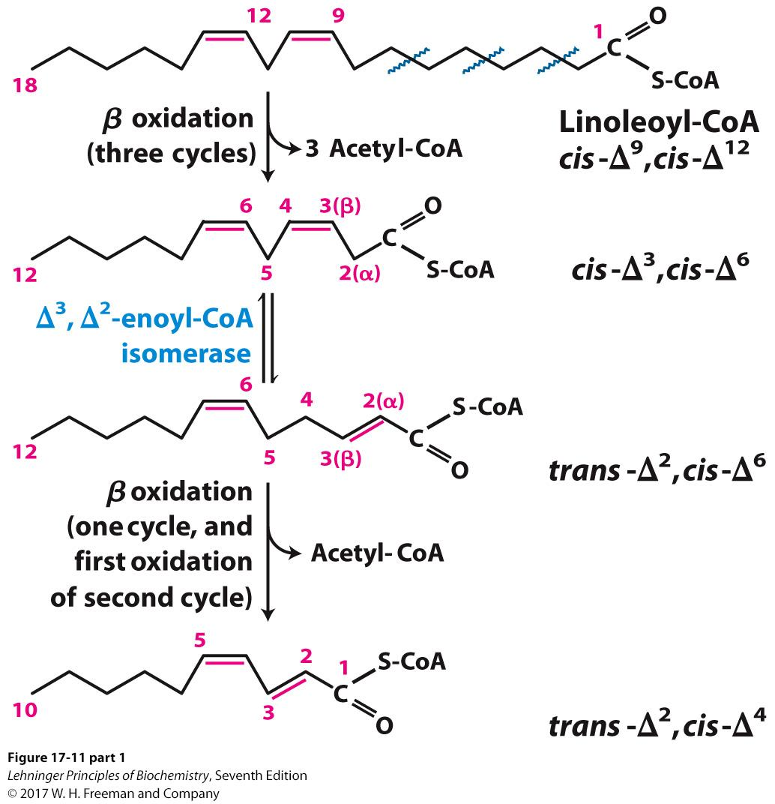
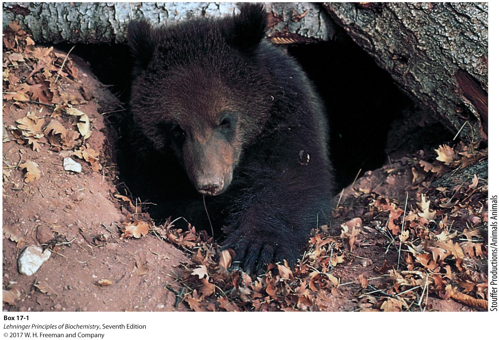
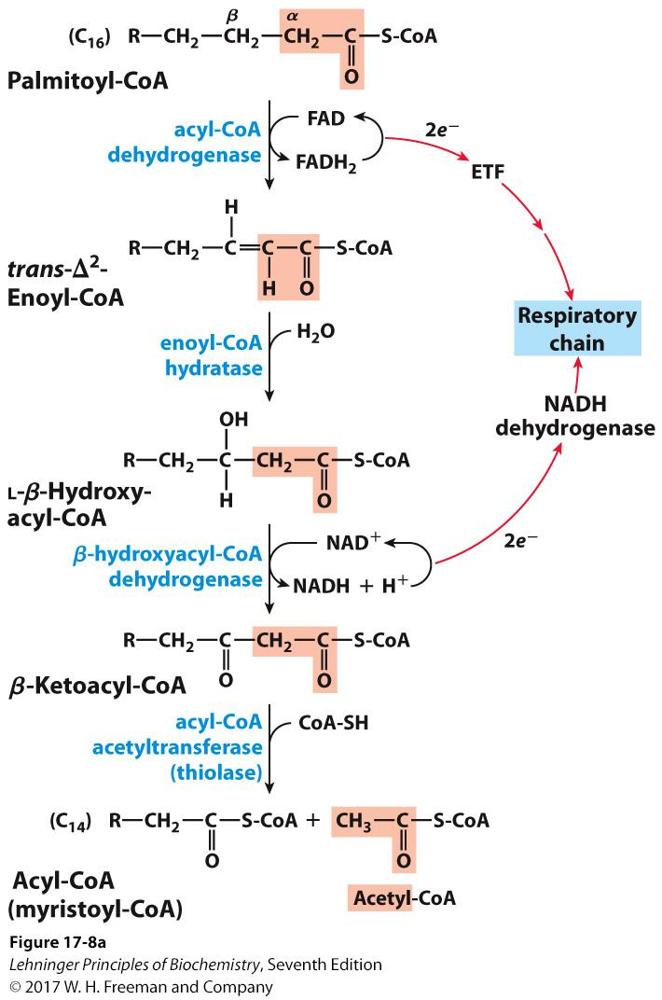
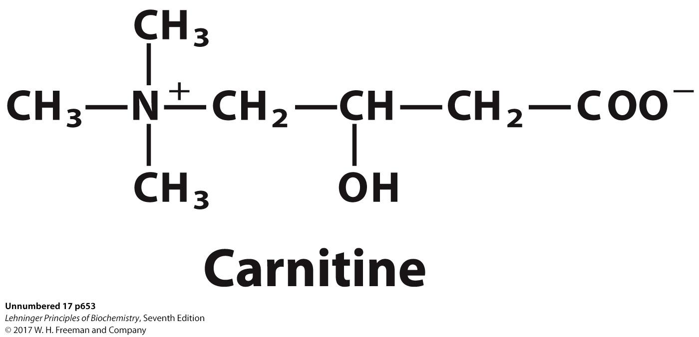
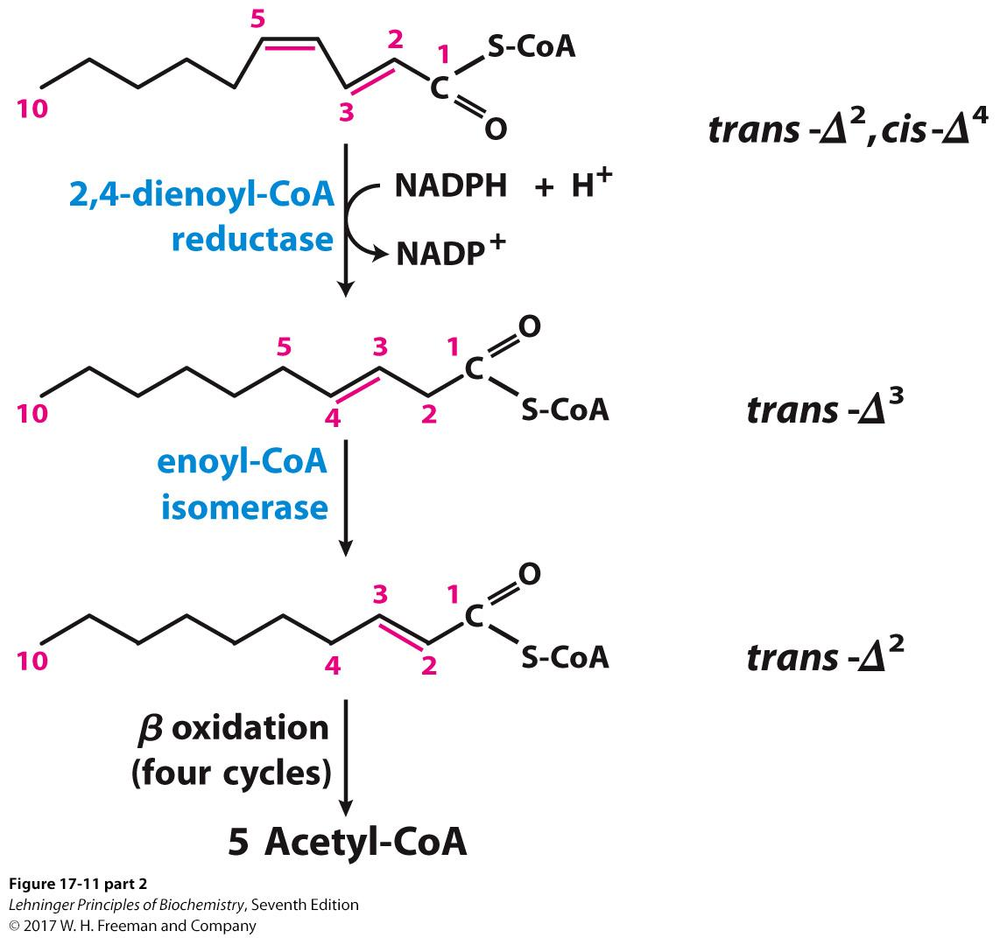
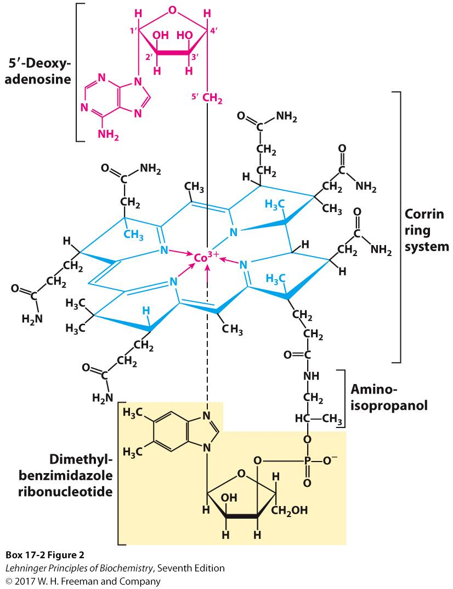
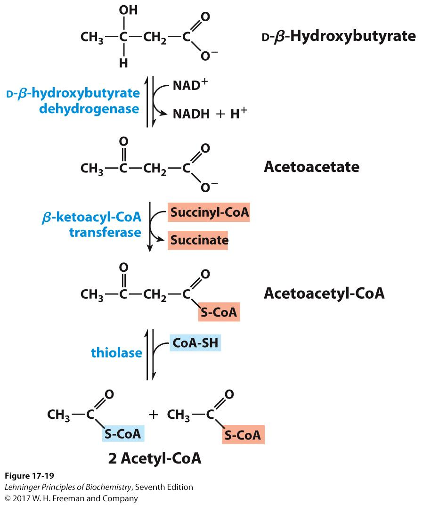
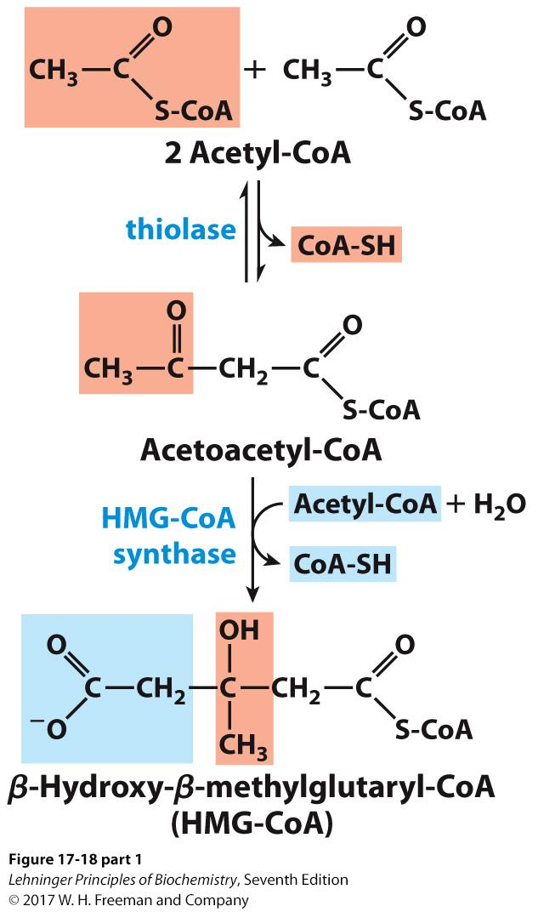

Catabolismo de Ácidos Graxos
27/11/2026
17| Catabolismo de Ácidos Graxos

© 2017 W. H. Freeman and Company
CAPÍTULO 17: Catabolismo de Ácidos Graxos
Objetivos de aprendizagem:
- Como as gorduras são digeridas nos animais
- Como as gorduras são mobilizadas e transportadas nos tecidos
- Como as gorduras são oxidadas
- Como os “corpos cetônicos” são produzidos
A Oxidação de Ácidos Graxos É uma Importante Fonte de Energia em Muitos Organismos
- Cerca de um terço de nossas necessidades energéticas vem dos triacilgliceróis da dieta.
- Cerca de 80% das necessidades energéticas do coração e do fígado de mamíferos são supridas pela oxidação de ácidos graxos.
- Muitos animais que hibernam, como os ursos-pardos, dependem quase exclusivamente das gorduras como fonte de energia.
Ursos em Hibernação Obtêm a Maior Parte de Sua Energia dos Ácidos Graxos Armazenados

As Gorduras Constituem um Armazenamento Eficiente de Combustível
- A vantagem das gorduras sobre os polissacarídeos:
- Os ácidos graxos contêm mais energia por carbono porque são mais reduzidos.
- Os ácidos graxos associam-se a menos água (ou a transportam) porque são apolares.
- A glicose e o glicogênio são para necessidades energéticas de curto prazo e para fornecimento rápido.
- As gorduras são para necessidades energéticas de longo prazo (meses), bom armazenamento e fornecimento lento.
Armazenamento de Gordura no Tecido Adiposo Branco

Os Ácidos Graxos da Dieta São Absorvidos no Intestino Delgado de Vertebrados

Os Lipídeos São Transportados no Sangue como Quilomícrons

Hormônios Desencadeiam a Mobilização dos Triacilgliceróis Armazenados
As lipases são ativadas pelos hormônios glucagon e epinefrina.

As Lipases Clivam os Ácidos Graxos do Esqueleto de Glicerol dos Triacilgliceróis
O Glicerol das Gorduras Entra na Glicólise
A glicerol-cinase ativa o glicerol às custas de ATP.
- As reações subsequentes
- recuperam mais do que ATP suficiente
- para cobrir esse custo.
Permite um catabolismo anaeróbio limitado das gorduras

O Glicerol É Oxidado ao Intermediário Glicolítico Di-hidroxiacetona-fosfato

A DHAP Prossegue pela Glicólise

O Transporte ou a Ligação a Fosfolipídeos Requer a Conversão em Acil-CoA Graxo

Transporte de Ácidos Graxos para a Mitocôndria
- As gorduras são degradadas em ácidos graxos e glicerol no citoplasma dos adipócitos.
- Os ácidos graxos são transportados pelo sangue para outros tecidos para serem usados como combustível.
- A β-oxidação dos ácidos graxos ocorre nas mitocôndrias.
- Ácidos graxos pequenos (< 12 carbonos) difundem-se livremente pelas membranas mitocondriais.
- Ácidos graxos maiores (a maioria dos ácidos graxos livres) são transportados pelo transportador acil-carnitina/carnitina.

A Oxidação de Ácidos Graxos Ocorre na Mitocôndria em Três Estágios
- O Estágio 1 consiste na conversão oxidativa de unidades de dois carbonos em acetil-CoA por meio da β-oxidação, com geração concomitante de NADH e FADH2.
- envolve a oxidação do carbono β do tioéster do acil-CoA graxo
- O Estágio 2 envolve a oxidação do acetil-CoA a CO2 pelo ciclo do ácido cítrico, com geração concomitante de NADH e FADH2.
- O Estágio 3 gera ATP a partir de NADH e FADH2 por meio da cadeia respiratória.
A Via da β-Oxidação
Cada passagem remove uma unidade acetila na forma de acetil-CoA.

Etapa 1: Desidrogenação de Alcano a Alceno
- Catalisada por isoformas da acil-CoA desidrogenase (AD) na membrana mitocondrial interna
- AD de cadeia muito longa (12–18 carbonos)
- AD de cadeia média (4–14 carbonos)
- AD de cadeia curta (4–8 carbonos)
- Resulta em uma dupla ligação trans, diferente dos ácidos graxos insaturados de ocorrência natural
- Análoga à reação da succinato desidrogenase no ciclo do ácido cítrico
- os elétrons do FAD ligado são transferidos diretamente para a cadeia transportadora de elétrons por meio da flavoproteína transferidora de elétrons (ETF)
Etapa 2: Hidratação do Alceno
- Catalisada por duas isoformas da enoil-CoA hidratase:
- hidratase de cadeia curta solúvel (crotonase)
- hidratase de cadeia longa ligada à membrana, parte do complexo trifuncional
- A água adiciona-se à dupla ligação, produzindo um álcool no carbono β.
- Análoga à reação da fumarase no ciclo do ácido cítrico
- mesma estereoespecificidade
Etapa 3: Desidrogenação do Álcool
- Catalisada pela β-hidroxiacil-CoA desidrogenase
- A enzima utiliza o cofator NAD como aceptor de hidreto.
- Apenas os isômeros L da hidroxiacil-CoA atuam como substratos.
- Análoga à reação da malato desidrogenase no ciclo do ácido cítrico
Etapa 4: Transferência da Cadeia de Ácido Graxo e Liberação de Acetil-CoA
- Catalisada pela acil-CoA acetiltransferase (tiolase) por um mecanismo covalente
- O carbono carbonílico da β-cetoacil-CoA é eletrofílico.
- O tiolato do sítio ativo atua como nucleófilo e libera o acetil-CoA.
- O enxofre terminal da CoA-SH atua como nucleófilo e recebe a cadeia de ácido graxo da enzima.
- A reação líquida é a tiólise da ligação carbono-carbono.
A Oxidação de Ácidos Graxos É Realizada por uma Única Proteína Trifuncional
- Hetero-octâmero
- quatro subunidades α
- atividade de enoil-CoA hidratase
- atividade de β-hidroxiacil-CoA desidrogenase
- responsáveis pela ligação à membrana
- quatro subunidades β
- atividade de tiolase de cadeia longa
- Pode permitir a canalização de substratos entre as enzimas
- Associada à membrana mitocondrial interna
- Processa cadeias de ácidos graxos com 12 ou mais carbonos
- As cadeias mais curtas são processadas por enzimas solúveis na matriz
A Oxidação de Ácidos Graxos É Realizada por uma Única Proteína Trifuncional

Cada Rodada Produz um Acetil-CoA e Encurta a Cadeia em Dois Carbonos

Catabolismo de Ácidos Graxos para Obtenção de Energia
Para o ácido palmítico (C16)
Repetir o processo de quatro etapas anterior mais seis vezes (sete no total) resulta em oito moléculas de acetil-CoA.
FADH2 é formado em cada ciclo (sete no total).
NADH é formado em cada ciclo (sete no total).
O acetil-CoA entra no ciclo do ácido cítrico e é oxidado a CO2.
Isso gera mais GTP, NADH e FADH2.
Os elétrons de todo o FADH2 e NADH entram na ETF.
NADH e FADH2 Servem como Fontes de ATP
TABELA 17-1 Rendimento de ATP durante a Oxidação de uma Molécula de Palmitoil-CoA a CO2 e H2O
| β-Oxidação |
|
|
| Acil-CoA desidrogenase |
7 FADH2 |
10,5 |
| β-Hidroxiacil-CoA desidrogenase |
7 NADH |
17,5 |
| Ciclo do ácido cítrico |
|
|
| Isocitrato desidrogenase |
8 NADH |
20 |
| α-Cetoglutarato desidrogenase |
8 NADH |
20 |
| Succinil-CoA sintetase |
|
8(b) |
| Succinato desidrogenase |
8 FADH2 |
12 |
| Malato desidrogenase |
8 NADH |
20 |
| Total |
|
108 |
(a) Esses cálculos pressupõem que a fosforilação oxidativa mitocondrial produz 1,5 ATP por FADH2 oxidado e 2,5 ATP por NADH oxidado.
(b) O GTP produzido diretamente nessa etapa rende ATP na reação catalisada pela nucleosídeo-difosfato cinase (p. 516).
Oxidação de Ácidos Graxos Insaturados
- Os ácidos graxos insaturados de ocorrência natural contêm duplas ligações cis.
- NÃO são substrato para a enoil-CoA hidratase.
- São necessárias duas enzimas adicionais.
- isomerase: converte duplas ligações cis que começam no carbono 3 em duplas ligações trans
- redutase: reduz duplas ligações cis que não estão no carbono 3
- Os ácidos graxos monoinsaturados requerem a isomerase.
- Os ácidos graxos poli-insaturados requerem ambas as enzimas.
Oxidação de Ácidos Graxos Monoinsaturados
Durante o primeiro dos cinco ciclos restantes, a etapa da acil-CoA desidrogenase é ignorada, resultando em 1 FADH2 a menos.

Oxidação de Ácidos Graxos Poli-insaturados
- Resulta em 1 FADH2 a menos após a isomerização, mas 1 FADH2 é produzido na primeira etapa do ciclo seguinte.
- O NADPH reduz a ligação insaturada restante, não resultando em nenhuma perda adicional de FADH2.

Oxidação de Ácidos Graxos de Cadeia Ímpar
- A maioria dos ácidos graxos da dieta tem número par de carbonos.
- Muitas plantas e alguns organismos marinhos também sintetizam ácidos graxos de cadeia ímpar.
- O propionil-CoA (composto de 3 carbonos) forma-se durante o último ciclo da β-oxidação de ácidos graxos de cadeia ímpar.
- O metabolismo bacteriano no rúmen de ruminantes também produz propionil-CoA.
A Isomerização na Oxidação do Propionato Requer a Coenzima B12

Um Composto Complexo Contendo Cobalto: Coenzima B12

A Coenzima B12 Facilita a Troca de Grupos Funcionais

A β-Oxidação em Plantas Ocorre Principalmente nos Peroxissomos
- A acil-CoA desidrogenase mitocondrial passa elétrons para a cadeia respiratória por meio da flavoproteína transferidora de elétrons.
- A acil-CoA desidrogenase peroxissomal/glioxissomal passa elétrons diretamente para o oxigênio molecular.
- energia liberada como calor
- o peróxido de hidrogênio é eliminado pela catalase
β-Oxidação em Mitocôndrias versus
- Peroxissomos ou
- Glioxissomos
- Um peroxissomo também é um glioxissomo quando estão presentes as enzimas do ciclo do glioxilato.
O acetil-CoA liberado da β-oxidação peroxissomal pode ser usado no ciclo do glioxilato ou exportado para o citosol e depois importado para as mitocôndrias.

Corpos Cetônicos
- A entrada do acetil-CoA no ciclo do ácido cítrico requer oxaloacetato.
- Quando o oxaloacetato está depletado, o acetil-CoA é convertido em corpos cetônicos.
- libera a coenzima A para a continuidade da β-oxidação
- Três formas de corpos cetônicos podem deixar o fígado: acetona, acetoacetato e β-hidroxibutirato.

A primeira etapa é o inverso da última etapa da β-oxidação: a reação da tiolase une duas unidades de acetato.
- Um terceiro acetil-CoA é incorporado na segunda etapa.
- Juntas, duas CoA são liberadas de três acetil-CoA.
- Formação de Corpos Cetônicos: Geração de CoA Livre

O Fígado É a Fonte dos Corpos Cetônicos

Corpos Cetônicos como Combustível

Capítulo 17: Resumo
Neste capítulo, aprendemos que:
- as gorduras são uma importante fonte de energia nos animais
- as unidades de dois carbonos dos ácidos graxos são oxidadas a acetil-CoA em um processo de β-oxidação de quatro etapas
- nesse processo, forma-se muito NADH e FADH2; eles podem render muito ATP na cadeia transportadora de elétrons
- durante a oxidação peroxissomal, as gorduras podem ser oxidadas para gerar calor o acetil-CoA formado no fígado pode ser oxidado pelo ciclo do ácido cítrico ou convertido em corpos cetônicos, que servem como combustíveis para outros tecidos